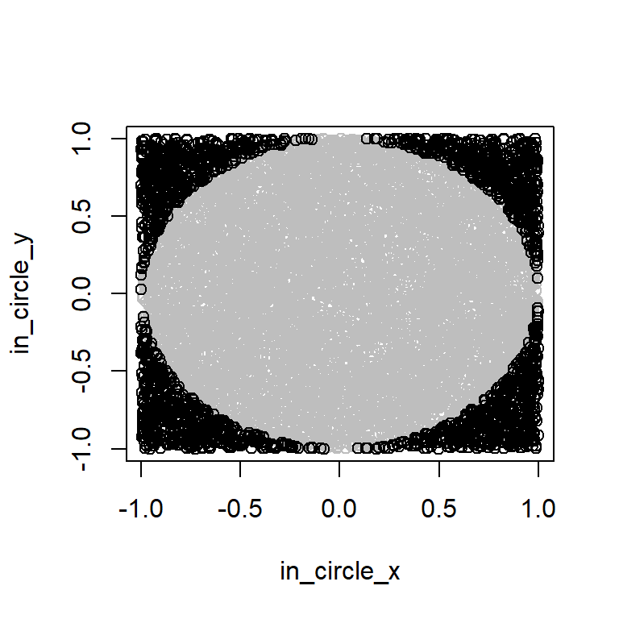
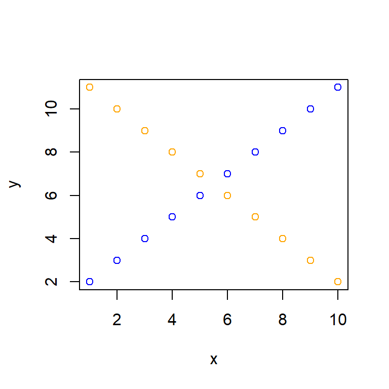

Lab 4
Question 1
Estimate the value of \(\pi\) by using probability simulation
- [20 pts] Please take random \(n\) points (say, \(n=10000\)) with in the [0, 1] * [0, 1] square in the Cartesian coordinate system. Then determine if the point is in the upper right quarter circle centered at the origin of radius 1. Calculate the probability of fall in the quarter-circle, which should be close to \(\frac{\pi}{4}\).
[Hints:
- You may use
runif()for taking the random points. - You may use if…else statement and for loop.]
- [10 pts] Draw the simulation points using
plot()andpoints()by coloring the in-circle points blue and out-circle points orange.
The plot should be something looks like
[Hint: The following example might be helpful.]
# Generate some data
x = 1:10
y = 1 + x
u = 1:10
v = 12 - u
# Use plot() and points()
plot(x, y, col = "blue") # Draw points with coordinates (x, y)
points(u, v, col = "orange") # Add points to the plot above.
- [5 pts] Based on the probability calculated in (a), estimate the value of \(\pi\).
Question 2 Central Limit Theorem Simulation
The Central Limit Theorem (CLT) is one of the most important concepts in statistics. It states that for any population distribution with a mean \(\mu\) and standard deviation \(\sigma\), if we randomly select a sufficiently large sample (sample size \(n\)), calculate its mean, and repeat this process a large number of times (\(t\) times), the distribution of these sample means will approximate a normal distribution centered around \(\mu\). The standard deviation of this distribution, known as the Standard Error, will be \(\frac{\sigma}{\sqrt{n}}\).
Please execute the following code to obtain the waiting.time vector, which contains the waiting times (in minutes) for Pirates of the Caribbean at Disney World. We will use the 5168 waiting time values as the population data.
if(!require("devtools", character.only = TRUE)) install.packages("devtools")
library(devtools)
if(!require("touringplans", character.only = TRUE)){
devtools::install_github("LucyMcGowan/touringplans")
}
library(touringplans)
waiting.time =
na.omit(touringplans_2018$wait_minutes_posted_avg
[touringplans_2018$attraction_name == "Pirates of the Caribbean"])
hist(waiting.time)
set.seed(1) # for replication purposes- [5 pts] Is the distribution above left-skewed? Right-skewed? Or symmetric? Find the population mean waiting time \(\mu\) and population standard deviation \(\sigma\).
- [10 pts] Let the sample size \(n = 2\). In other words,
Step 1: Take a random sample of two waiting times with replacement from the
waiting.timevector each time. You may usesample(..., replace = TRUE)for this step.Step 2: Find the average of the two sampled waiting times.
Repeat Step 1 and 2 for \(t = 1000\) times and save the means as the vector
sample.mean. Then usehist()to draw the histogram ofsample.mean. Is the distribution left-skewed, right-skewed, or symmetric?
- [5 pts] Continue with part (b). Calculate the mean and standard deviation of
sample.meanvector. Are these values close to \(\mu\) and \(\frac{\sigma}{\sqrt{n}}\), where \(\mu\) and \(\sigma\) are from part (a), respectively? [Please note that the values do not need to be exact the same; being close enough is sufficient.]
- [20 pts] Write a function named
sample.mean.n.tfor a given \(n\) and \(t\), get thesample.meanvector of the means. Try the function with \(n = 50\) and \(t = 2000\). Usehist()to draw the histogram of the \(2000\) means. Is the distribution left skewed, right skewed, or symmetric?
- [5 pts] Continue with part (d). Find the mean and standard deviation of
sample.mean. Are these values close to \(\mu\) and \(\frac{\sigma}{\sqrt{n}}\), where \(\mu\) and \(\sigma\) are from part (a)?